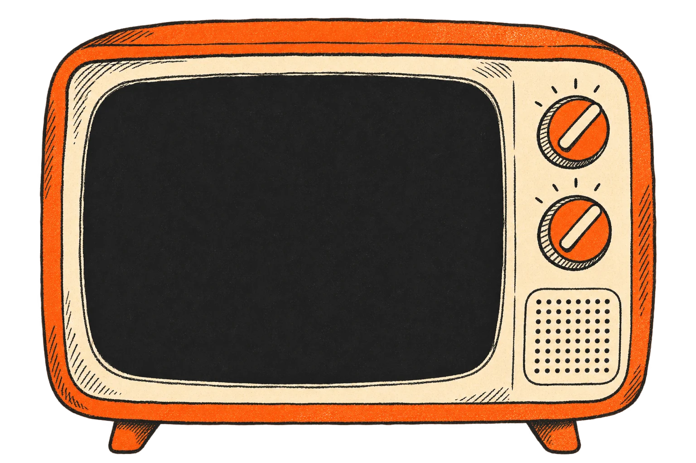
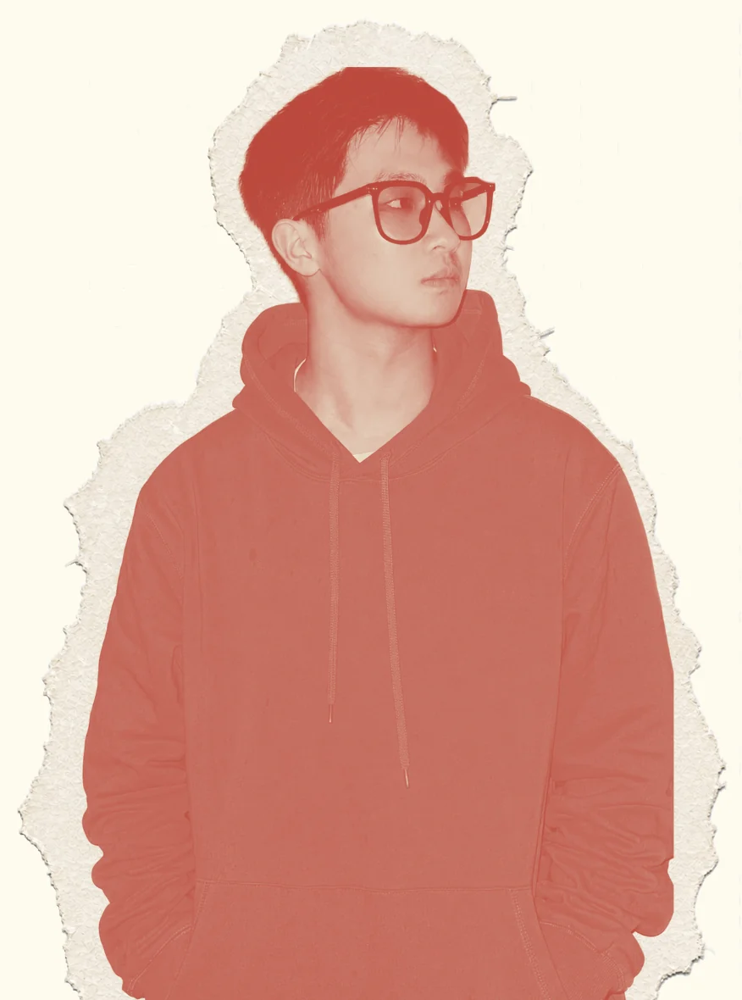
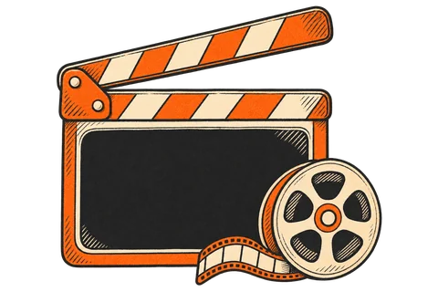
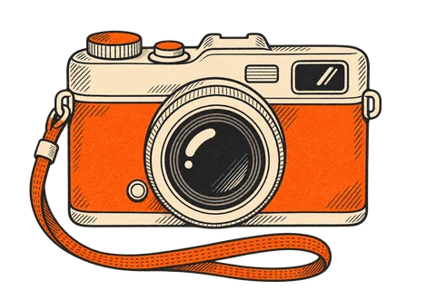

PORTFOLIO of Shen Jiajun

CH 01 / 09 Schools Disappearing from the Map
Shen Jiajun
Journalism undergraduate at East China University of Political Science and Law Shanghai, China
In my journalistic practice, I focus on how social issues in urban and rural communities shape daily life. When something happens, I want to understand what those involved have experienced, while thinking carefully about how I tell their story. This question runs through my reporting, documentaries and photography, as well as the scenes I construct in narrative film and generative media.
What I do
- Interviewing and reporting
- Data and interactive journalism
- Documentary filmmaking
- Cinematography and editing

News Work
Video Creation

Photographic Works

Internship Project
Click an image to view the work ↗